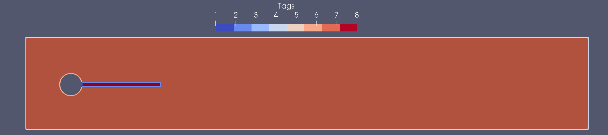

Tutorial 11: Fluid-Structure Interaction


In this tutorial, we will learn
- How to solve a surface-coupled multi-physics problem.
- Construct FE spaces defined in different domains.
- Define interface triangulations and integrate on them.
Problem statement
Strong form
Let $\Gamma_{\rm FS}$ be the interface between a fluid domain $\Omega_{\rm F}$ and a solid domain $\Omega_{\rm S}$. We denote by $\Gamma_{\rm F,D}$ and $\Gamma_{\rm F,N}$ the fluid boundaries with Dirichlet and Neumann conditions, respectively. The Fluid-Structure Interaction (FSI) problem reads:
find $u_{\rm F}$, $p_{\rm F}$ and $u_{\rm S}$ such that
satisfying the Dirichlet and Neumann boundary conditions
and the kinematic and dynamic conditions at the fluid-solid interface
Where $\boldsymbol{\sigma}_{\rm F}(u_{\rm F},p_{\rm F})=2\mu_{\rm F}\boldsymbol{\varepsilon}(u_{\rm F}) - p_{\rm F}\mathbf{I}$ and $\boldsymbol{\sigma}_{\rm S}(u_{\rm S})=2\mu_{\rm S}\boldsymbol{\varepsilon}(u_{\rm S}) +\lambda_{\rm S}tr(\boldsymbol{\varepsilon}(u_{\rm S}))\mathbf{I}$.
Geometry and Discrete model
In this tutorial we solve the benchmark descrived in [1], consisting on a flow over an elastic flag after a cylinder. The computational domain is defined by a channel of size $\Omega \doteq (0,4.5)\times(0,0.41)$, with an embedded cylinder of radius $R=0.05$ and center at $C=(0.2,0.2)$. The associated FE triangulation is denoted by $\mathcal{T}$, the fluid and solid domain and their associated triangulations will be denoted by $\Omega_{\rm F}$, $\Omega_{\rm S}$, $\mathcal{T}_{\rm F}$ and $\mathcal{T}_{\rm S}$, respectively.
In order to load the discrete model we first setup Gridap
using GridapThe discrete model for the elastic flag problem is generated by loading the "../models/elasticFlag.json" file.
model = DiscreteModelFromFile("../models/elasticFlag.json")We can inspect the loaded geometry and associated parts by printing to a vtk file:
writevtk(model,"model")This will produce an output in which we can identify the different parts of the domain, with the associated labels and tags.
| Part | Notation | Label | Tag |
|---|---|---|---|
| Solid-cylinder wall | $\Gamma_{\rm S,D_{cyl}}$ | "fixed" | 1 |
| Fluid-solid interface | $\Gamma_{\rm FS}$ | "interface" | 2 |
| Channel inlet | $\Gamma_{\rm F,D_{in}}$ | "inlet" | 3 |
| Channel outlet | $\Gamma_{\rm F,N_{out}}$ | "outlet" | 4 |
| Channel walls | $\Gamma_{\rm F,D_{wall}}$ | "noSlip" | 5 |
| Fluid-cylinder wall | $\Gamma_{\rm F,D_{cyl}}$ | "cylinder" | 6 |
| Fluid domain | $\Omega_{\rm F}$ | "fluid" | 7 |
| Solid domain | $\Omega_{\rm S}$ | "solid" | 8 |

External conditions and properties
Boundary conditions
We apply Dirichlet boundary conditions at the channel inlet, upper and lower boundaries and on the cylinder. A parabolic profile is enforced at the channel inlet, while a no-slip condition is imposed on the remaining Dirichlet boundaries.
const U = 1.0
const H = 0.41
uf_in(x) = VectorValue( 1.5 * U * x[2] * ( H - x[2] ) / ( (H/2)^2 ), 0.0 )
uf_0(x) = VectorValue( 0.0, 0.0 )
us_0(x) = VectorValue( 0.0, 0.0 )We consider a free tranction condition at the channel outlet
hN(x) = VectorValue( 0.0, 0.0 )
p_jump(x) = 0.0External forces
In this test, the body forces acting on the fluid an solid are zero.
f(x) = VectorValue( 0.0, 0.0 )
s(x) = VectorValue( 0.0, 0.0 )
g(x) = 0.0Material properties
We use a linear elastic constitutive law for the elastic flag. Given the Young's modulus $E$ and the Poisson ratio $\nu$, we can compute the Lamé constants, $\lambda$ and $\mu$, using the following function:
function lame_parameters(E,ν)
λ = (E*ν)/((1+ν)*(1-2*ν))
μ = E/(2*(1+ν))
(λ, μ)
endThen, we get the Lamé parameters for a solid with $E=1.0$ MPa and $\nu=0.33$.
const E_s = 1.0
const ν_s = 0.33
const (λ_s,μ_s) = lame_parameters(E_s,ν_s)The Cauchy stress tensor for the solid part is defined by $\sigma_s = 2\mu\varepsilon + \lambda tr(\varepsilon)\mathbf{I}$. Note that we use the trace operator from the LinearAlgebra package. Note that this function will be used as a composition (∘), using as argument a function whose arguments depend on the coordinates, without the need of passing such coordinates as an argument. That is σ_s(ε(u)) = σ_s ∘ ε(u).
using LinearAlgebra: tr
σₛ(ε) = λ_s*tr(ε)*one(ε) + 2*μ_s*εFor the fluid part, we only need to define the viscosity $\mu_f$, which we set to $0.01$.
const μ_f = 0.01The Cauchy stress tensor for the fluid part is given by $\sigma_f = \sigma^{dev}_f - p\mathbf{I}$, with $\sigma^{dev}_f=2\mu_f$ the deviatoric part of the stress. Since we use a mixed form with the pressure $p$ as an unknown, the stress law will only involve the deviatoric part.
σ_dev_f(ε) = 2*μ_f*εNumerical scheme
FE Spaces
In this tutorial we use an inf-sup stable velocity-pressure pair, $P_k/P_{k-1}$ elements, with continuous velocities and pressures. We select the same velocity interpolation space for the fluid and the solid parts, defined as follows
where $T$ denotes an arbitrary cell of the FE mesh $\mathcal{T}_{\rm X}$, and $P_k(T)$ is the usual Lagrangian FE space of order $k$ defined on a mesh of triangles or tetrahedra. Note that the sub-index $(\cdot)_{\rm X}$ stands for the fluid or solid parts, $(\cdot)_{\rm F}$ or $(\cdot)_{\rm S}$, respectively. On the other hand, the space for the pressure is only defined in the fluid domain, $\Omega_{\rm F}$, and is given by
Before creating the FE spaces, we first need to define the triangulation of each of the sub-domains, which are constructed restricting the global triangulation to the corresponding part. This is done by calling the Triangulation (or equivalently Interior) function with the desired geometrical part label, i.e. "solid" and "fluid", respectively. Here we create the triangulation of the global domain, $\mathcal{T}$, and the solid and fluid triangulations, $\mathcal{T}_{\rm F}$ and $\mathcal{T}_{\rm S}$.
Ω = Interior(model)
Ω_s = Interior(model,tags="solid")
Ω_f = Interior(model,tags="fluid")We also generate the triangulation and associated outer normal field for the outlet boundary, $\Gamma_{\rm F,N_{out}}$, which will be used to impose a Neumann condition.
Γ_out = BoundaryTriangulation(model,tags="outlet")
n_Γout = get_normal_vector(Γ_out)Finally, to impose the interface condition between solid and fluid, we will need the triangulation and normal field of such interface, $\Gamma_{\rm FS}$. The interface triangulation is generated by calling the InterfaceTriangulation function specifying the two interfacing domain triangulations. Note that the normal field will point outwards with respect to the first entry.
Γ_fs = InterfaceTriangulation(Ω_f,Ω_s)
n_Γfs = get_normal_vector(Γ_fs)In what follows we will assume a second-order veloticty interpolation, i.e. $k=2$
k = 2Now we define the reference FE for the velocity and pressure fields. The velocity field reference FE, both for fluid and solid domains, will be defined by a 2-dimensional VectorValue type :Lagrangian reference FE element of order k. The reference FE for the pressure will be given by a scalar value type :Lagrangian reference FE element of order k-1.
reffeᵤ = ReferenceFE(lagrangian,VectorValue{2,Float64},k)
reffeₚ = ReferenceFE(lagrangian,Float64,k-1)Having set up all the ingredients, we can create the different FE spaces for the test functions. For the velocity FE spaces we call the TestFESpace function with the corresponding discrete model, using the velocity reference FE reffeᵤ and conformity :H1. Note that we assign different Dirichlet boundary labels for the two different parts, generating the variational spaces with homogeneous Dirichlet boundary conditions, $V_{\rm F,0}$ and $V_{\rm S,0}$ .
Vf = TestFESpace(
Ω_f,
reffeᵤ,
conformity=:H1,
dirichlet_tags=["inlet", "noSlip", "cylinder"])
Vs = TestFESpace(
Ω_s,
reffeᵤ,
conformity=:H1,
dirichlet_tags=["fixed"])For the pressure test FE space, we use the fluid discrete model, the pressure reference FE reffeₚ and :C0 conformity.
Qf = TestFESpace(
Ω_f,
reffeₚ,
conformity=:C0)The trial FE spaces are generated from the test FE spaces, adding the corresponding function for the various Dirichlet boundaries, leading to $U_{\rm F,g_{\rm F}}$, $U_{\rm S,g_{\rm S}}$ and $P_{\rm F}$.
Uf = TrialFESpace(Vf,[uf_in, uf_0, uf_0])
Us = TrialFESpace(Vs,[us_0])
Pf = TrialFESpace(Qf)Finally, we glue the test and trial FE spaces together, defining a unique test and trial space for all the fields using the MultiFieldFESpace function. That is $Y=[V_{\rm S,0}, V_{\rm F,0}, Q_{\rm F}]^T$ and $X=[U_{\rm S,g_{\rm S}}, U_{\rm F,g_{\rm F}}, P_{\rm F}]^T$
Y = MultiFieldFESpace([Vs,Vf,Qf])
X = MultiFieldFESpace([Us,Uf,Pf])Numerical integration
Once we have all the triangulations, we can generate the quadrature rules to be applied each domain. This will be generated by calling the Measure function, that given a triangulation and an integration degree, it returns the Lebesgue integral measure $d\Omega$.
degree = 2*k
dΩₛ = Measure(Ω_s,degree)
dΩ_f = Measure(Ω_f,degree)Idem for the boundary part.
bdegree = 2*k
dΓ_out = Measure(Γ_out,bdegree)Idem for the interface part.
idegree = 2*k
dΓ_fs = Measure(Γ_fs,idegree)Weak form
We now introduce the solution and test function vectors as $[\mathbf{u}^h_{\rm s},\mathbf{u}^h_{\rm s}, p^h_{\rm f}]^T$ and $[\mathbf{v}^h_{\rm s},\mathbf{v}^h_{\rm f}, q^h_{\rm f}]^T$. The weak form of the coupled FSI problem using the Nitche's method, see for instance [2], reads:
find $[\mathbf{u}^h_{\rm s},\mathbf{u}^h_{\rm s}, p^h_{\rm f}]^T \in X$ such that
where
a((us,uf,p),(vs,vf,q)) = a_s(us,vs) + a_f((uf,p),(vf,q)) + a_fs((us,uf,p),(vs,vf,q))
l((vs,vf,q)) = l_s(vs) + l_f((vf,q)) + l_f_Γn(vf)with the following definitions:
- The bilinear form associated with the solid counterpart, $a_s(\mathbf{u}^h_{\rm s},\mathbf{v}^h_{\rm s})$, defined as
a_s(u,v) = ∫( ε(v) ⊙ (σₛ ∘ ε(u)) )dΩₛ- The bilinear form associated with the fluid counterpart, $a_f((\mathbf{u}^h_{\rm f},p^h_{\rm f}),(\mathbf{v}^h_{\rm f},q^h_{\rm f}))$, is defined as
a_f((u,p),(v,q)) = ∫( ε(v) ⊙ (σ_dev_f ∘ ε(u)) - (∇⋅v)*p + q*(∇⋅u) )dΩ_f- The bilinear form associated with the coupling between fluid and solid counterparts, $a_{fs}((\mathbf{u}^h_{\rm s},\mathbf{u}^h_{\rm f}, p^h_{\rm f}),(\mathbf{v}^h_{\rm s},\mathbf{v}^h_{\rm f}, q^h_{\rm f}))$, is given by:
a_fs((us,uf,p),(vs,vf,q)) = ∫( α*(jump_Γ(vf,vs)⋅jump_Γ(uf,us)) +
jump_Γ(vf,vs)⋅t_Γfs(1,p,uf,n_Γfs) +
t_Γfs(χ,q,vf,n_Γfs)⋅jump_Γ(uf,us) )dΓ_fsWhere $\chi$ is a parameter that can take values $1.0$ or $-1.0$ and it is used to define the symmetric or antisymmetric version of the method, respectively. To define this form we used the well known Nitsche's method, which enforces the continuity of fluid and solid velocities as well as the continuity of the normal stresses, see for instance [2].
const γ = 1.0
const χ = -1.0
jump_Γ(wf,ws) = wf.⁺-ws.⁻
t_Γfs(χ,q,w,n) = q.⁺*n.⁺ - χ*n.⁺⋅(σ_dev_f∘ε(w.⁺))From the interface triangulation we can obtain the interface elements length, $h$, and the penalty parameter, $\alpha=\gamma\frac{\mu_f}{h}$, used in the Nitsche's terms.
using Gridap.CellData
dim = num_cell_dims(Γ_fs)
h_Γfs = get_array(∫(1)dΓ_fs)
α = CellField( lazy_map(h->γ*μ_f/(h.^dim),h_Γfs), Γ_fs)- The linear form associated with the solid counterpart, $l_s(\mathbf{v}^h_{\rm s})$, is defined as
l_s(v) = ∫( v⋅s )dΩₛ- The linear form associated with the fluid counterpart, $l_f(\mathbf{v}^h_{\rm f})$ is defined as
l_f((v,q)) = ∫( v⋅f + q*g )dΩ_f- The linear form associated with the fluid Neumann boundary condition, $l_{f,\Gamma_N}(\mathbf{v}^h_{\rm f})$, is defined as
l_f_Γn(v) = ∫( v⋅hN )dΓ_outThe final bilinear and linear forms will be given by
Algebraic System of Equations
After defining the weak form of the problem and the integration quadrature rules to perform the numerical integration, we are ready to assemble the linear system of equations. In this case, the system will have the following structure:
In order to construct the system we define the final FE operator, constructed using the function AffineFEOperator passing as arguments the bilinear and linear forms, $a$ and $l$, together with the trial and test FE spaces, $X$ and $Y$.
op = AffineFEOperator(a,l,X,Y)Finally, we call solve to obtain the solution vector of nodal values $[\mathbf{U}^h_{\rm S},\mathbf{U}^h_{\rm F},\mathbf{P}^h_{\rm F}]^T$
uhs, uhf, ph = solve(op)Post-processing
Visualization
The solution fields $[\mathbf{U}^h_{\rm S},\mathbf{U}^h_{\rm F},\mathbf{P}^h_{\rm F}]^T$ are defined over all the domain, extended with zeros on the inactive part. Calling the function writevtk passing the global triangulation, we will output the global fields.
writevtk(Ω,"trian", cellfields=["uhs" => uhs, "uhf" => uhf, "ph" => ph])
However, we can also restrict the fields to the active part by calling the function restrict with the field along with the respective active triangulation.
writevtk(Ω_s,"trian_solid",cellfields=["uhs"=>uhs])
writevtk(Ω_f,"trian_fluid",cellfields=["ph"=>ph,"uhf"=>uhf])
Quantities of Interest
Γ_S = BoundaryTriangulation(model,tags=["cylinder","interface"])
dΓₛ = Measure(Γ_S,bdegree)
n_ΓS = get_normal_vector(Γ_S)
FD, FL = sum( ∫( (n_ΓS⋅σ_dev_f(ε(uhf))) - ph*n_ΓS )*dΓₛ )
println("Drag force: ", FD)
println("Lift force: ", FL)References
[1] Turek, S., Hron, J., Madlik, M., Razzaq, M., Wobker, H., & Acker, J. F. (2011).* Numerical simulation and benchmarking of a monolithic multigrid solver for fluid-structure interaction problems with application to hemodynamics. In Fluid Structure Interaction II (pp. 193-220). Springer, Berlin, Heidelberg.
[2] Burman, E., and Fernández, M. A. Stabilized explicit coupling for fluid–structure interaction using Nitsche's method. Comptes Rendus Mathematique 345.8 (2007): 467-472.
This page was generated using Literate.jl.